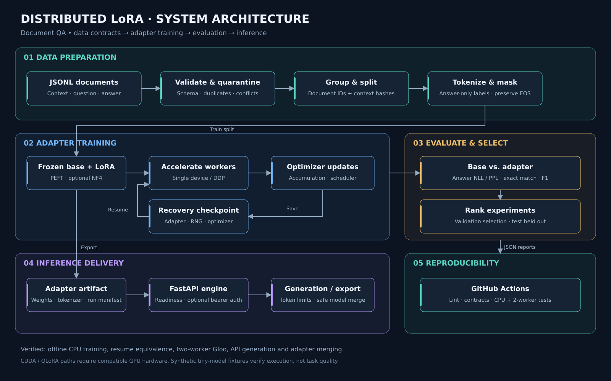

01 / DOCUMENT STUDIO
Bring a document.
Follow the answer.
Try real question answering in your browser, then look under the hood.
Full pipeline.
Your source material
01 INPUTNo sign-in required
First use downloads approximately 65 MB of public model weights. Inference runs locally; your document is not sent to a server. Up to 512 model tokens per question + document.
The result
02 EVIDENCEAn answer with a source.
Ask a question to extract an answer span from your document.
EXTRACTED ANSWER
Source passage
The score measures this model's span preference, not the probability that the answer is correct. Try a question with an explicit answer in the document.
02 / EXPERIMENT EXPLORER
Less to train.
More to inspect.
Compare real rank experiments and inspect what the pipeline verified.
Rank / capacity tradeoff
RECORDED RUNSFour optimizer updates per rank · seed 42 · α/r = 2. Selection uses validation data only.
Frozen vs. trainable parameters
Held-out comparison
8-STEP RUN · r = 4Four test documents. The random fixture scores zero on exact match and F1; a small NLL change does not establish useful QA performance.
Inspect raw results ↗Execution audit
MEASURED03 / RECOVERY LAB
Interrupt the run.
Keep the progress.
Explore the checkpoint protocol behind the verified resume test.
Training timeline
READYThis is a protocol simulation, not training in your browser. The actual CPU run resumed after update 2 and matched uninterrupted adapter parameters exactly.
Checkpoint state
NONE YETCompatible settings. Recovery is permitted.
Document-safe splitting
ACTUAL FIXTUREDocuments sharing an ID or normalized context stay in one split. Click a split to inspect its records.
04 / SYSTEM ARCHITECTURE
From raw records
to a served adapter.
Trace the project’s real components and their execution boundaries.

